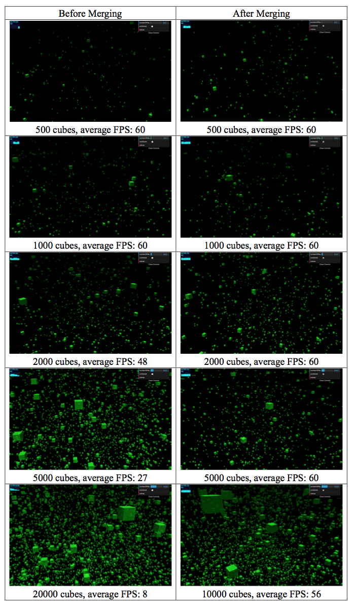
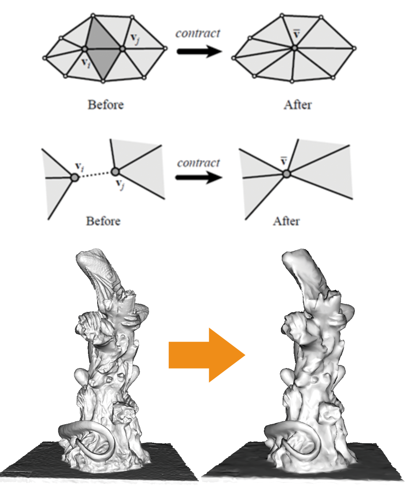
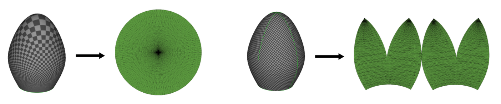
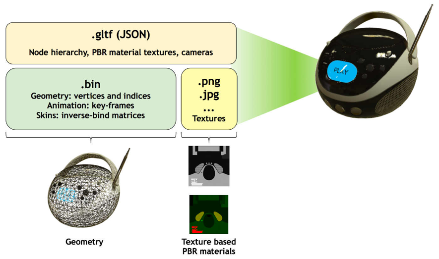

Every time an object is added into the scene, there will be a drawcall from CPU to GPU. Large number of drawcalls will result CPU into spending lots of time in preparing drawcalls. So mesh merging can speed up the rendering. However, mesh merging online only deal with objects with same materials.
3D mesh data may have a very high resolution, which may contain many vertices and faces, and sometimes this number may go up to one million or even more. So we need to simplify the mesh (reduce the number or triangles and vertices in a mesh) for faster rendering. One of the most famous algorithm is called QEM which is based on edge collapse.
Unfolding means to divide a 3D object into pieces and unfold pieces into 2D images. To be unfolded, prerequisites of topology and geometry are required. After a series of operations, the 3D surfaces are unwrapped into a 2D plane, with each vertex assigned to a texture coordinate known as UV coordinates. Also the 2D plane is commonly called UV space.

Texture baking is always used for low-resolution models to simulate details of high-resolution models. This technology is widely applied especially in real-time rendering such as video games. The most commonly used texture type involved in texture baking might be normal map.
To calculate lighting condition of a given surface, we first need to calculate the normal vectors of it. And by changing the directions of normal vectors, we can deceive the computer to render surfaces with details like bumps and dents.
glTF is a format for 3D objects first announced in 2015, and it uses optimized structure to guarantee compatibility and extensibility. The JSON part has a hierarchy which describes the whole scene, animation, camera, and also links with .bin files containing raw data for geometry in binary and images for textures of models by using URIs.

After the new glTF 2.0 standard came out, Google announced Draco, a new open-source library, that can compress 3D geometric meshes and point clouds. It was then integrated as an extension of glTF 2.0, quantizing mesh attributes and compress connectivity using method named Edgebreaker.
It visits triangles in a depth-first manner, and for every triangle it generates a descriptor of symbols in the set {C, L, E, R, S}, also called a clers sequence, which describes the method to attach a new triangle to the previous visited one. Because the frequency of these symbols are different, especially that C composes half of all the symbols, we can use entropy-compression such as Huffman coding.